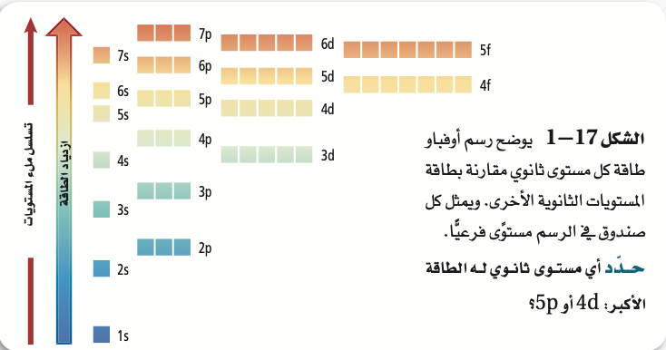
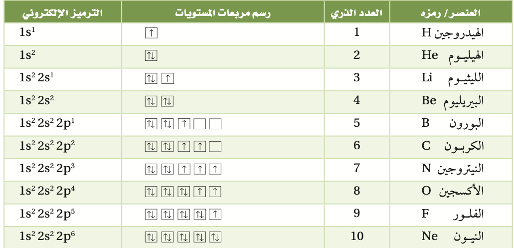
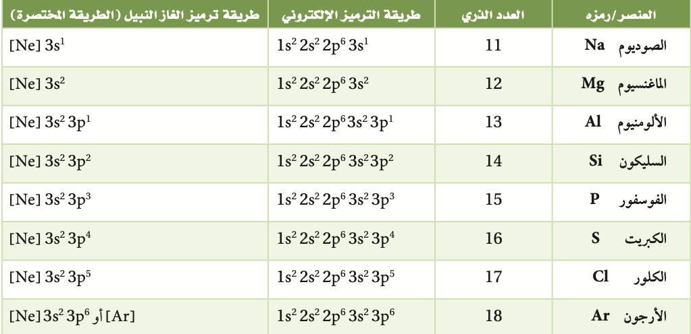
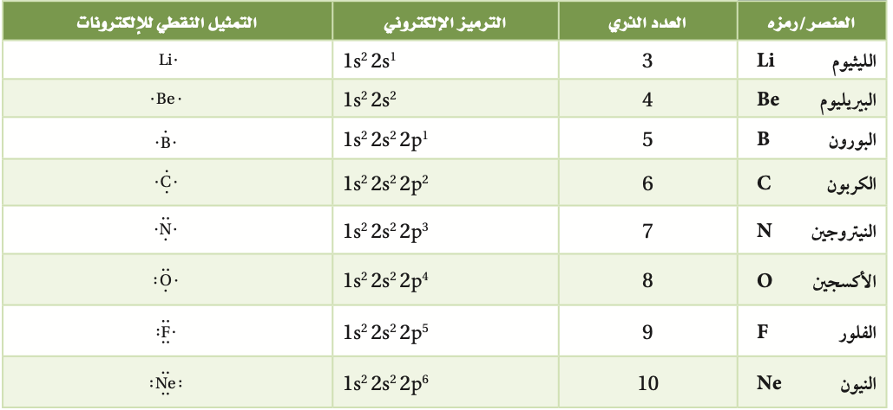

الفكرة الرئيسية:
يحدد التوزيع الإلكتروني في الذرة باستخدام ثلاث قواعد.
العودة للصفحة الرئسية - الدرس السابق
التوزيع الإلكتروني
الفكرة الرئيسية:
يحدد التوزيع الإلكتروني في الذرة باستخدام ثلاث قواعد.
يسمى ترتيب الإلكترونات في الذرة التوزيع الإلكتروني . ولأن الأنظمة ذات الطاقة المنخفضة أكثر استقرارًا من الأنظمة ذات الطاقة العالية فإن الإلكترونات تميل إلى اتخاذ ترتيب يعطي الذرة أقل طاقة ممكنة.
ويسمى ترتيب الإلكترونات في الوضع الأقل طاقة والأكثر ثباتا التوزيع الإلكتروني في الحالة المستقرة للعنصر. وتحكم المبادئ أو القواعد – ومنها مبدأ أوفباو ومبدأ باولي وقاعدة هوند – كيفية ترتيب الإلكترونات في مستويات الذرة.
ينص مبدأ أوفباو (البناء التصاعدي) على ان كل الإلكترون يسعى لان يكون في المجال الأقل طاقة.
ينص مبدأ باولي على ان المجال لا يمكن أن يتسع لأكثر من إلكترونين، على أن لا يكون لهما نفس اتجاه الحركة
تنص قاعدة هوندعلى أن تعبئة الإلكترونات في المجالات المتساوية الطاقة يتم بشكل فردي قبل البدء بإضافة الإلكترون الثاني للمجال نفسه؛ إذ لا يمكن لإلكترونين لهما نفس اتجاه الحركة أن يشغلا المجال نفسه.
يمكن التعبير عن الإلكترونات في المستويات الفرعية بأسهم في المربعات؛ إذُ يَعنَون كل مربع بعدد الكم الرئيس ومستوى الطاقة الفرعي في المستوى الثانوي.
يعبر الترميز الإلكتروني عن مستوى الطاقة الرئيس والمستويات الثانوية المرتبطة مع كل المستويات الفرعية في الذرة، ويتضمن أسًا يمثل عدد الإلكترونات في المستوى.
طريقة لتمثيل التوزيع الإلكتروني للغازات النبيلة الموجودة في العمود الأخير من الجدول الدوري، ويحتوي مدارها الأخير (ما عدا الهيليوم) على ثمانية إلكترونات، وهي عادة مستقرة. وتستخدم الأقواس المربعة في ترميز الغاز النبيل. مثلاً:
Ne]3s1]
تعرف إلكترونات التكافؤ بأنها إلكترونات المستوى الخارجي للذرة (مستوى الطاقة الرئيس الأخير) ا
فعلى سبيل المثال، تحتوي ذرة الكبريت على ١٦ إلكتروًَنا، ستة منها فقط تحتل مستويات
3s,3p
الخارجية ،وهي إلكترونات التكافؤ، كما هو موضح في التوزيع الإلكتروني الآتي
S: [Ne] 3s2 3p4
تسمى التمثيل النقطي للإلكترونات، وفيها يكتب رمز العنصر الذي يمثل نواة الذرة ومستويات الطاقة الداخلية، محاًطا بنقاطُ تمثل إلكترونات المستوى الخارجي جميعها.
انتهى